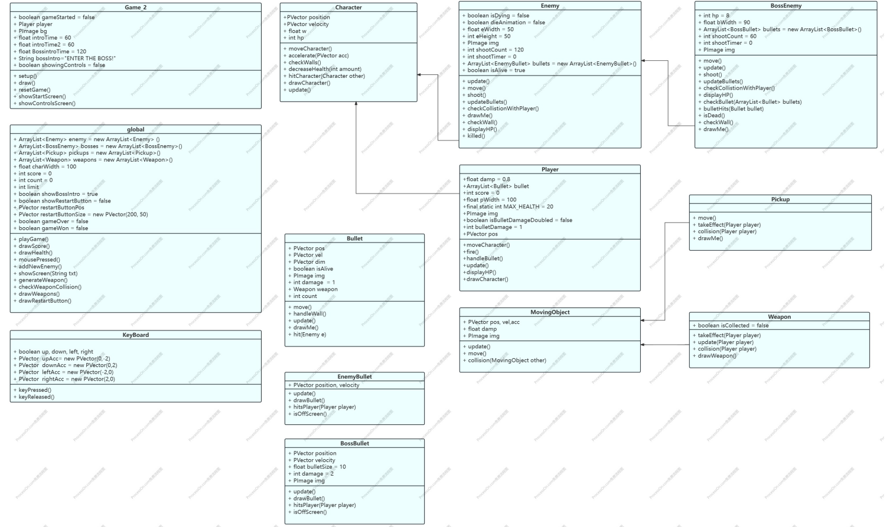
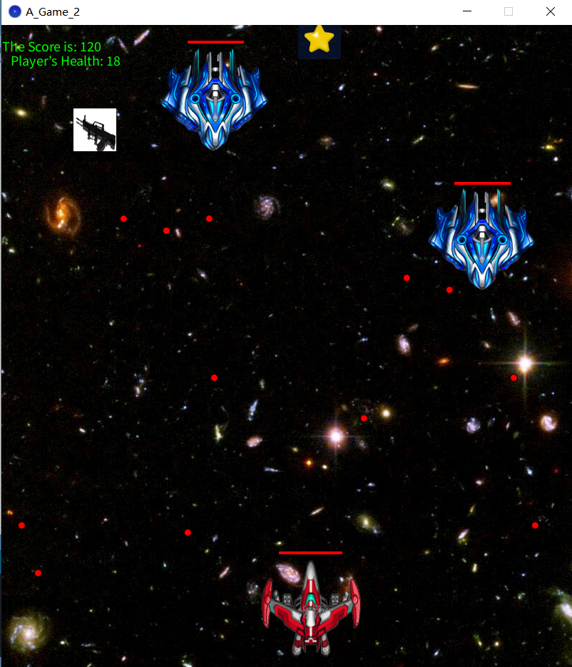
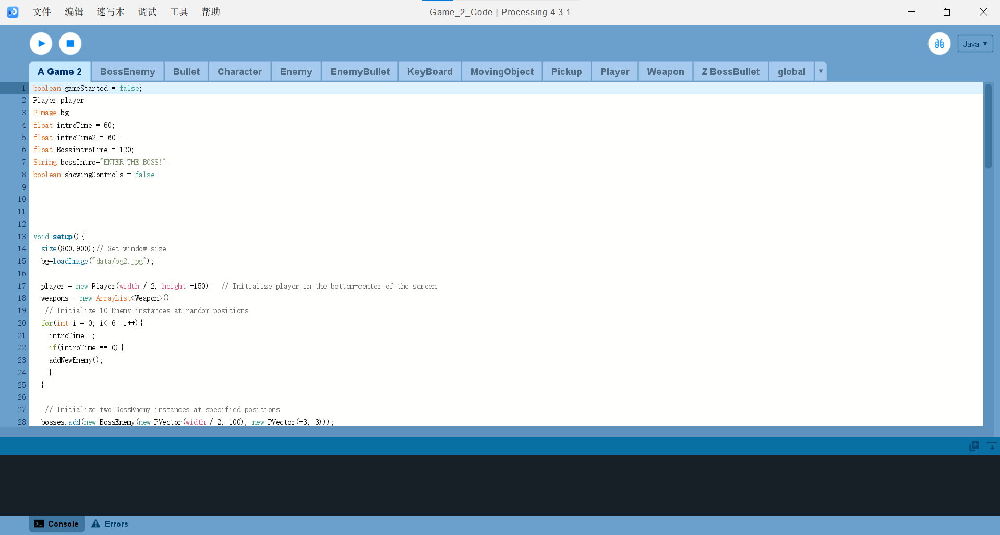

2D Shooting Game
Game Development • Processing
IAT167 – Final Individual Project (Simon Fraser University)

Overview
This project is a 2D shooting game developed in Processing. The player can move in all directions and shoot enemies while avoiding damage. The game includes enemy waves, boss battles, pickups, and a scoring system. The goal is to survive and defeat all enemies and bosses.
Tools
Processing
Process
Initial Concept
This project began as a final individual project for IAT167. I started with the core gameplay system, focusing on player movement and shooting mechanics. The initial version only included simple enemies moving downward, but the experience felt repetitive, which led me to expand the design.
System Development
I introduced additional systems such as enemy attacks, collision detection, pickups, and scoring. Boss battles were later added to create stronger progression and challenge. These changes made the gameplay more dynamic and engaging.
Code Structure
As the project grew, code organization became important. I used object-oriented programming with inheritance, creating a base class for shared movement logic, and extending it into Player, Enemy, BossEnemy, and Pickup classes. This made the system more modular and easier to manage.
Iteration
I went through multiple rounds of testing and refinement. Early versions were either too simple or too chaotic, so I adjusted enemy speed, bullet behavior, spawn timing, and boss difficulty. These iterations helped improve balance and player experience.

Challenges
One of the main challenges was managing code complexity as more mechanics were added. Interactions between the player, enemies, bullets, bosses, and pickups became harder to control over time. This made it necessary to reorganize the code into a clearer system.
To solve this, I used inheritance and polymorphism to group shared behaviors while keeping each class responsible for its own specific functions. This approach made the project easier to manage and helped reduce repetition in the code.
Another challenge was balancing the gameplay. Some early versions felt too easy, while others became overwhelming too quickly. I adjusted enemy spawn rates, bullet speed, and boss difficulty multiple times to create a better balance between challenge and playability.


Design Decisions
The game was designed to increase in difficulty over time so players could learn the mechanics step by step. Basic enemies introduce the core system, while boss encounters create stronger moments of tension and progression.
Pickups such as health and weapon upgrades were added to support the player and introduce more strategic decision-making. Visual feedback, including score and health indicators, helps players quickly understand their current state during gameplay.
Reflection
This project helped me understand how to build and organize a larger game system. I learned that object-oriented design can make development more efficient and flexible, especially when a project includes many interacting mechanics.
If I continue improving this project, I would refine enemy behavior, add more gameplay variation, and further polish the difficulty curve. This project reflects my interest in game development and demonstrates my ability to combine programming, system design, and gameplay mechanics.